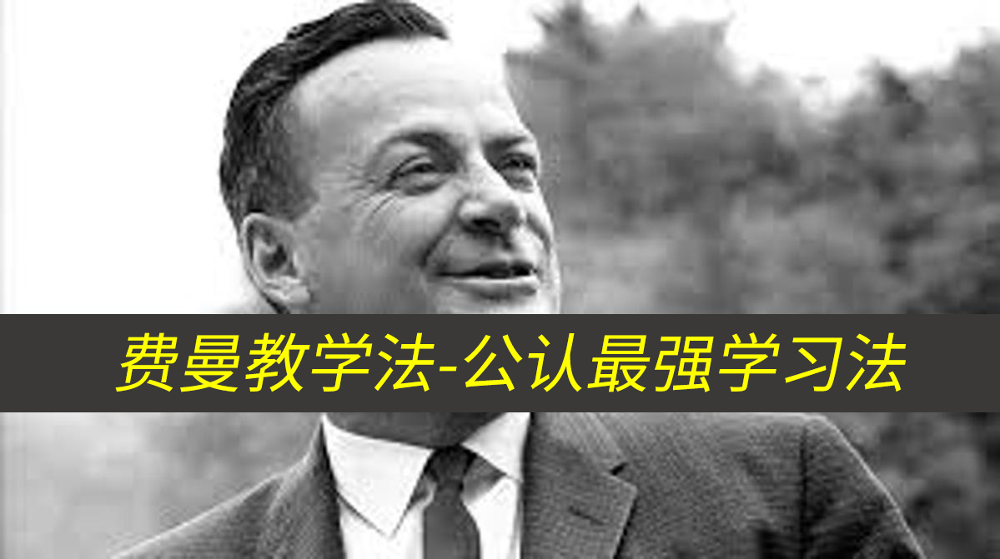

费曼技巧:最强的学习方法
author:ZhaoSong 2022.07.18 16:03
一、什么是费曼教学法
聊到费曼教学法，就不得不说一下创造它的人：理查德·菲利普斯·费曼。
当你深入了解后，你会发现，对于学习方法来说，它更像是一种思维方法。

那费曼教学法到底是什么呢？
之前有过这么一则新闻，一位只有小学学历的农民家庭，他们的子女却清华北大的学子，后在一个采访
中他们的家长是这么说的：“我这人什么都不会，更别提是我教育孩子们了，反而是我让孩子不停的教
我！”
孩子们放学后，他就会让孩子把今天学到的内容再给他也讲一遍；在孩子做作业的时候，他也会读孩子
的课本，不会的地方，就记下来等孩子做完作业去问孩子，如果也孩子回答不上来，那就让他们明天去
学校的时候问老师。
这一个做法其实就是费曼教学法，把自己输入（学到）的知识，通过输出的形式教会、教懂大部分人。
二、费曼教学法为什么这么有用？
明白了费曼教学法之后，你可能还是会有疑惑，输入+输出的费曼教学法，为什么会这么有用，原理何在
？
关键在于学习模式的转变
费曼教学法能够真正意义上的改变我们的学习模式。
在米国的国家实验室研究证实，不同的学习方式，内容在我们大脑中的留存率是完全不一样的，从听讲
到现场示范，这一部分被称为被动学习，而从讨论到教别人，这一部分被称为主动学习。
我们大多数时候都是在被动学习，比如听别人输出观点，其实就是自己的输入。
阅读书本、看视频就连日常交流其实都还是自己的输入
现场示范，有了输入和输出，但对结果不用考虑太多。
但如果你用上费曼教学法，被动学习就将会变为主动学习
你会在知识输入之后在与别人在的讨论上输出
你会在输入之后去实践
你会在输入之后尝试把别人教懂
这样的内容留存率是会越来越高的
我们可以来想象一下，当你读到这篇文章的时候，其实就是通过阅读的方式输入了费曼教学法这个方法
，如果你就此打住，你对这个方法的理解就只有10%。这只能算作留存于你大脑中的有意义的废物罢了，
会随着时间的推移，逐渐被分解忘却。
你尝试通过教懂别人，那首先自己要对费曼教学法有一个深入的理解才行，你要弄明白，你才能让别人
理解吧。
而这个过程可以看做是一个分解的过程，你会把费曼教学法这个方法大卸八块，每一个部位都看得特别
清楚，这样才能真正理解这个方法。
如果你的听众文化水平不高，你还需要把这些拆分的部分换一个更加通俗易懂的方式去展现，那这其实
就是在拆分理解后的每一个部分你仍然需要在细致的拆分成更好理解的部分，一直往深处拆，就能够拆
到本质了。
当你连这个要输出的本质都理解了，那自然能够教给别人了。
但在做到教会别人的路上，还有一个阻碍，就是怎样把所想，转化为所说？
那是不是又要重新把费曼教学法大卸八块，再把语言融入其中，再结合起来，最后教懂别人。
整个费曼教学法的操作过程，就是拆、合、拆、合，和你小时候拼装乐高玩具一样，拆、合久了，你对
玩具的熟悉程度也一定是远胜于那些只拆或者只合的人。
通过教导“他人”，让自己掌握知识，这是费曼学习法的特点。
学习并不是单向灌输的过程，而是吸收再输出的过程。一个人只有先获得并消化足够多的知识，才能将知识输出教学。
费曼学习法通过“以教促学”的形式，使我们从被动的学习状态变成主动的学习模式，从而大大提高我们学习的效率。
在运用上，我们需要从2个部分出发
整理
输出
费曼学习具体步骤，很简单
- 确定学习目标
- 模拟教学学习法
- 回顾
- 简化